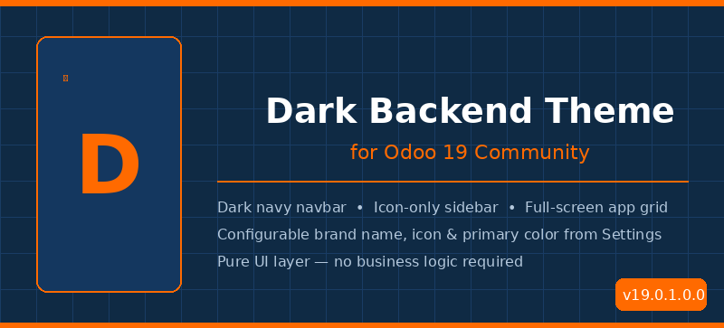

Dark Backend Theme is a fully standalone Odoo 19 backend theme. It replaces the default light interface with a professional dark navy + industrial orange design. Install it on any database, configure the branding from Settings, and get a consistent, polished UI — with zero impact on your business data.
No menus are added. No business models are touched. It is a pure UI layer that works alongside any existing or future addon.
--oil-primary controls all accent colorsGo to Settings → Dark Backend Theme to personalise the look:
| Setting | Description | Default | Example |
|---|---|---|---|
| Brand Name | Text shown next to the logo icon in the navbar | Oil ERP | My Company |
| Brand Icon |
Bootstrap icon name without the bi- prefix
|
droplet-fill | globe / fire / building |
| Primary Color | Hex color for the main accent (navbar border, buttons, icons) | #FF6A00 | #3498db / #27ae60 |
🛈 After saving, reload the page (F5) to apply the updated theme. Browse all Bootstrap icons at icons.getbootstrap.com.
A lightweight JS service fetches the configured color from
ir.config_parameter before any component renders
and sets --oil-primary on :root.
All SCSS uses this variable, so the whole theme updates instantly.
The Odoo 19 NavBar component is extended via
patch(). Brand name and icon are read from the
theme config service and rendered reactively — no page reload
required after navigating.
The sidebar and home app grid are injected using Odoo's standard
t-inherit / xpath template extension
pattern — fully compatible with future Odoo updates.
# Copy to your addons folder cp -r dark_backend_theme /opt/odoo/extra-addons/ # Install on your database python odoo-bin \ -c odoo.conf \ -d your_database \ -i dark_backend_theme \ --stop-after-init # Restart Odoo sudo systemctl restart odoo
| Odoo Version | Edition | Status |
|---|---|---|
| 19.0 | Community | ✓ |
| 17.0 | Community | Not tested |
| 19.0 | Enterprise | Not tested |
static/src/, and update the @import URLs at the
top of static/src/scss/backend_theme.scss.
Developed by Shohjahon Obruyev | GitHub Repository | License: LGPL-3